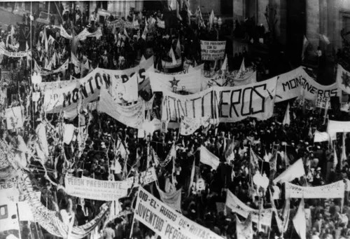

El 24 de marzo de 1976, un golpe de estado derrocó al gobierno de Isabel Perón, y dio inicio a un período de dictadura en Argentina, conocido como la "Dictadura Militar". Este golpe fue llevado a cabo por las Fuerzas Armadas y la policía, y desencadenó un periodo de violencia sistemática, persecución política, y violaciones de derechos humanos.
Durante los años siguientes, miles de personas fueron detenidas desaparecidas, y se implementó un gobierno que justificó el uso de la fuerza para "combatir la subversión".
